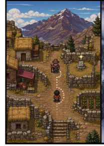
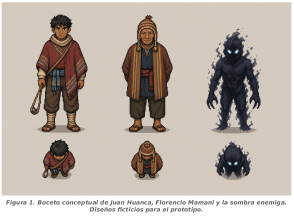
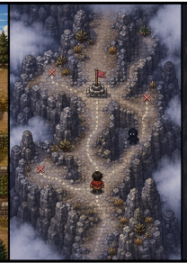
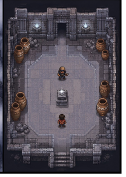

NIVEL 01
La comunidad
Habla con Florencio y encuentra el camino que sube al cerro.
Videojuego narrativo · UMSA · INF-266
Acompaña a Juan por una comunidad andina, el ascenso al Kallami y una cámara subterránea donde cada recuerdo cambia el sentido de la aventura.
Proyecto académico de aventura 2D · versión final 1.5.0

KALLAMI · TALLER INF-266
Consulta la conversación completa de ChatGPT con la revisión del proyecto, los criterios y la evidencia. El resultado grupal registrado es 20/20 · 100/100.
CHECKLIST DE LA MESA
El checklist recibido se titula “Defensa individual”. Esta tabla presenta una autoevaluación común del proyecto y no reemplaza la nota individual ni el criterio de la docente. El equipo confirma que la docente revisó en persona el contenido y la defensa; las actividades relacionadas obtuvieron puntaje completo. El criterio de entrega también se cumple con los archivos presentados y el ZIP del portal. Los estados no tienen cortes numéricos definidos en el checklist; por eso “Satisfactorio” es una lectura orientativa.
| N.º | Criterio | Resultado | Puntos | Evidencia revisada |
|---|---|---|---|---|
| 1 | El videojuego ejecuta correctamente. | Sí | 2 | Gameplay final 1.5 y paquete de escritorio. |
| 2 | La mecánica principal funciona y se entiende. | Sí | 2 | Video final, scripts del juego y GDD final. |
| 3 | El jugador tiene un objetivo o reto claro. | Sí | 2 | Objetivos por zona en el HUD y GDD final. |
| 4 | Los controles y la interacción responden adecuadamente. | Sí | 2 | Controles documentados, interacción implementada y prompts visibles en el gameplay. |
| 5 | La interfaz / HUD es visible y útil. | Sí | 2 | El video muestra objetivo, vida, memorias, mapa y mensajes. |
| 6 | El estudiante demuestra el juego en vivo. | Sí | 2 | Revisión presencial de la docente confirmada por el equipo; Classroom registra puntaje completo. |
| 7 | Explica claramente cómo funciona su videojuego. | Sí | 2 | El equipo confirma que la defensa fue revisada en persona y obtuvo puntaje completo en las actividades relacionadas. |
| 8 | Explica una dificultad técnica y cómo la resolvió. | Sí | 2 | El equipo confirma revisión presencial y puntaje completo; informe de seguridad y bitácora documentan los hallazgos y correcciones. |
| 9 | Presenta el video de gameplay solicitado. | Sí | 2 | Gameplay final de 60 s; captura del registro del tráiler marca 10/10, sin adjunto visible. |
| 10 | Presenta correctamente los enlaces o archivos de entrega. | Sí | 2 | El equipo presentó los materiales y la docente los revisó presencialmente; el ZIP reúne el portal y sus archivos. La URL pública puede añadirse al publicar. |
Cómo leer las capturas: la plataforma registra TRAILER 10/10, Semana 2 8/8, Desafío 10/10 y Propuesta GDD 10/10. El equipo aclara que la docente revisó el trabajo, el contenido y la defensa presencialmente y después anotó las notas en Classroom. Los puntajes completos respaldan esa evaluación; los archivos se incluyen en el ZIP del portal y el enlace de ChatGPT ya está puesto. La página todavía no tiene URL pública.
Juan parte desde el pueblo siguiendo las indicaciones de Florencio Mamani. En el ascenso aparecen sombras y memorias dispersas; al final, el jugador debe ordenar los relatos antes de alcanzar la plata.
El juego toma como punto de partida un relato oral sobre el Cerro Kallami y construye alrededor de él una aventura ficticia en tres niveles.

Habla con Florencio y encuentra el camino que sube al cerro.

Explora el sendero, esquiva las sombras y reúne tres memorias.

Enfrenta a los guardianes, ordena los hechos y supera el derrumbe.
MIRA EL RECORRIDO
El video muestra el tono visual y las mecánicas principales del prototipo. Para ejecutar la versión de escritorio, descarga el proyecto y sigue la guía adjunta.
Descargar video de gameplayTRÁILER / GAMEPLAY · 60 SEGUNDOS
Juega directamente en el navegador, o descarga el proyecto Godot de escritorio con su servidor local y guía para Linux y Windows.
Versión web: guarda perfiles y avance en el navegador de este dispositivo; no se sincronizan entre equipos. Los controles actuales están pensados para teclado. La exportación requiere un navegador compatible con WebAssembly y WebGL 2.
EDUARDO · SEGURIDAD DE LA INFORMACIÓN
La revisión final comprobó el inicio de sesión por perfil, la protección del PIN mediante derivación PBKDF2 con sal, el uso de tokens y el aislamiento de partidas. La suite del proyecto pasó 12 pruebas y el informe documenta 18 comprobaciones adicionales.
Leer el informe finalLa API todavía acepta ciertos cambios de salud y posición propuestos por el cliente.
La transición hacia la cámara final no exige las tres memorias en todos los casos.
El código no muestra un límite de intentos para PIN; este punto se identificó por revisión estática.
La auditoría registra también límites de alcance y condiciones para no presentar el prototipo como un servicio de producción.
MATERIAL DEL EQUIPO
Documentos de diseño, seguimiento, ejecución y seguridad reunidos en un solo lugar.
Memoria de la versión de escritorio con servidor: juego, arquitectura, pruebas, seguridad, aportes y límites.
Descargar DOCX ↗ DISEÑO · GDD FINAL 1.5Especificación compatible con el paquete Godot que integra FastAPI y SQLite; registra los cambios desde Semana 1.
Descargar DOCX ↗ DISEÑO · SEMANA 1Premisa, niveles, mecánicas, alcance y responsabilidades del equipo.
Descargar DOCX ↗ DISEÑO · SEMANA 2Versión del documento de diseño integrada en el paquete final.
Descargar DOCX ↗ SEGURIDAD · SEMANA 2Revisión del Alpha, hallazgos y recomendaciones de corrección.
Descargar DOCX ↗ SEGURIDAD · FINALAlcance, evidencias reproducibles, resultados y riesgos que siguen abiertos.
Descargar DOCX ↗ GUÍA TÉCNICARequisitos, instalación, arranque del servidor y apertura del juego.
Descargar PDF ↗ DEFENSA FINALOrden sugerido, evidencia de persistencia, seguridad aplicada y preguntas probables.
Abrir documento ↗ PRUEBAS · SEMANA 2Casos de verificación documentados para la versión Alpha.
Abrir documento ↗ EVIDENCIA TÉCNICAScript complementario que usa una base temporal durante las verificaciones.
Descargar PY ↗ BITÁCORADecisiones y ajustes realizados durante el desarrollo del GDD.
Descargar DOCX ↗El contenido descargable forma parte del paquete académico del proyecto. Las conclusiones de seguridad describen una auditoría de prototipo y sus límites.
Cliente, jugabilidad e integración en Godot.
Servidor FastAPI, SQLite y contrato HTTP/JSON.
Pruebas y revisión de seguridad.
Universidad Mayor de San Andrés · Carrera de Informática · Taller de Proyecto INF-266